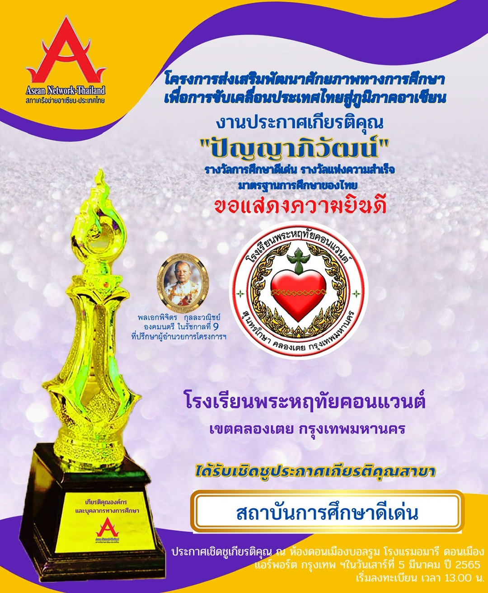

Announcement of the award plaque "Panyapiwat" branch of outstanding educational institutes Year of the Buddhist Era 2022

congratulations Phraharuthai Convent School, Khlong Toei District, Bangkok
Received an honorary award, received a plaque, "Panyapiwat", an honorary award Outstanding Educational Institution
Year 2022,
the ASEAN Network Council - Thailand organized an award ceremony. "Panyapiwat"
aims to promote and honor educational personnel in both the public and private sectors with their achievements.
And innovations in effective learning management affect the quality of learners as a good role model.
to individuals in educational organizations and to be a good role model for the educational industry to be evident to the society
and inspiring the development of teaching and learning management quality Continually building morale
in working for educational personnel with outstanding works that contribute to self-development
of educational personnel to have quality in learning management, promoting and stimulating innovation
Learning management that affects the quality of learners, promotes the development of the educational potential of Thailand.
educational standards to drive Thailand into the ASEAN region with quality
The honor was announced at the Don Mueang Ballroom, Amari Don Mueang
Airport Bangkok Hotel on Saturday, March 5, 2022 at 1:00 PM.
Phraharuthai Convent School
94 Sunthonkosa Road, Khlong Toei Subdistrict, Khlong Toei District, Bangkok 10110
Telephone number 02 671 9041 - 4 contact the administration ext. 100 or 102 contact the Finance Room ext. 301
Open for business every Monday - Friday 07.30 - 17.30, Saturday 08.30 - 15.30 except public holidays.
Website : www.shc.ac.th Facebook : Phraharuthai Convent School Youtube Chanel : Phraharuthai Convent School Praharuthai Convent School